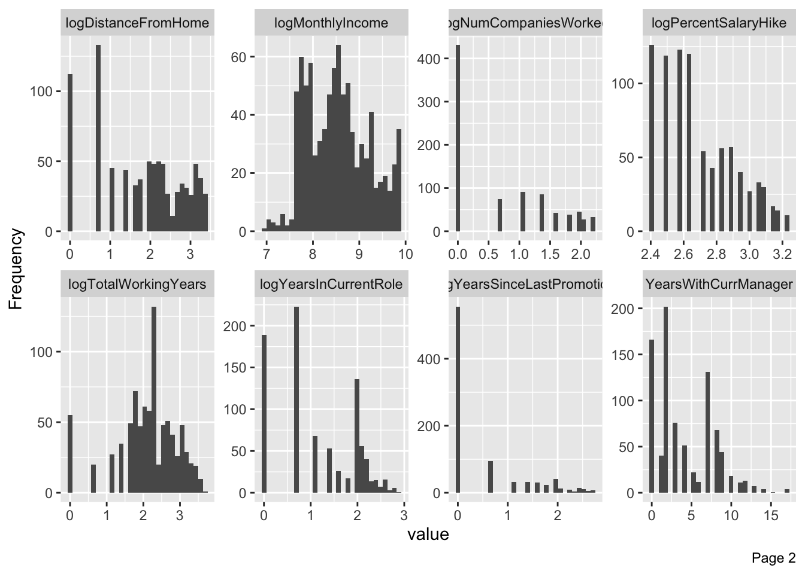
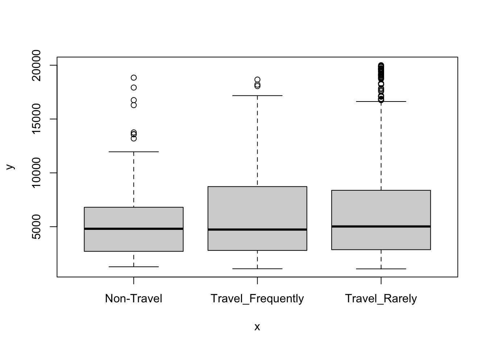
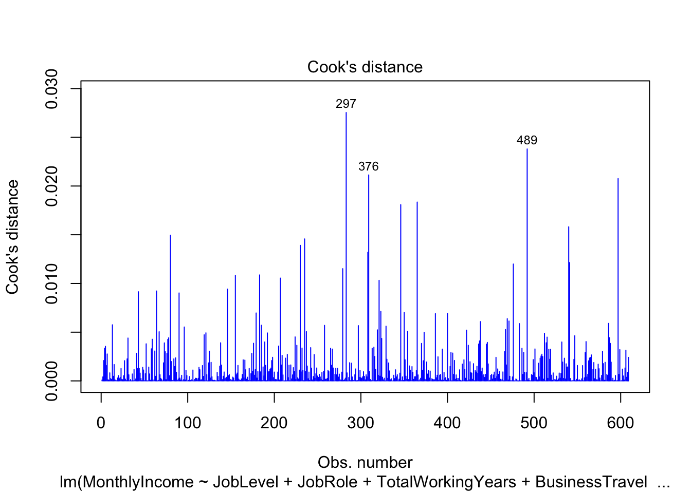
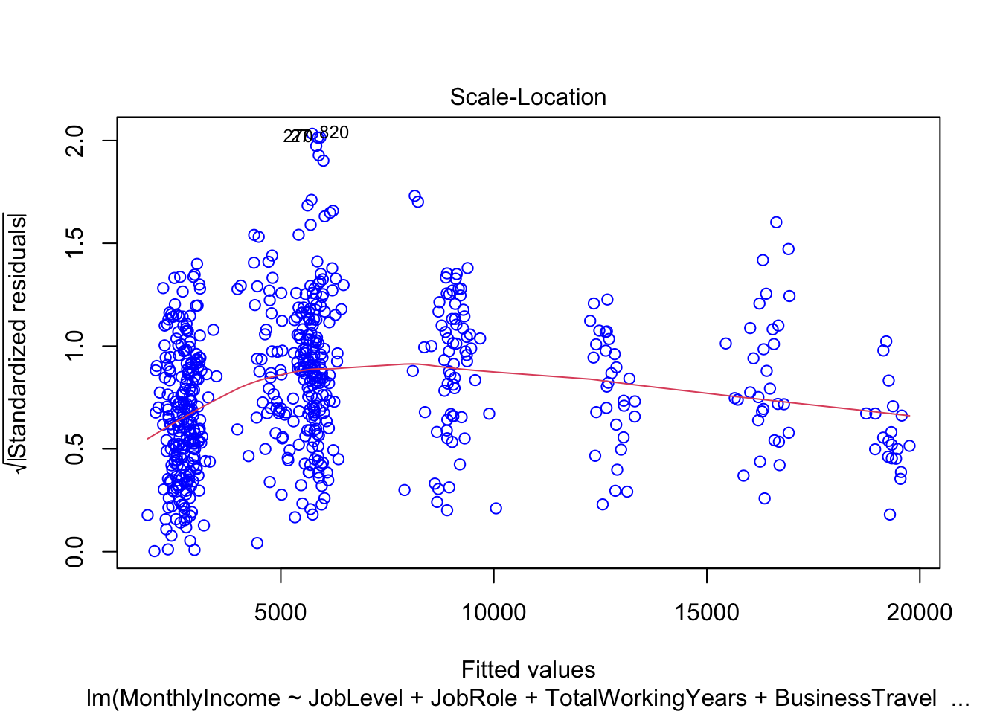
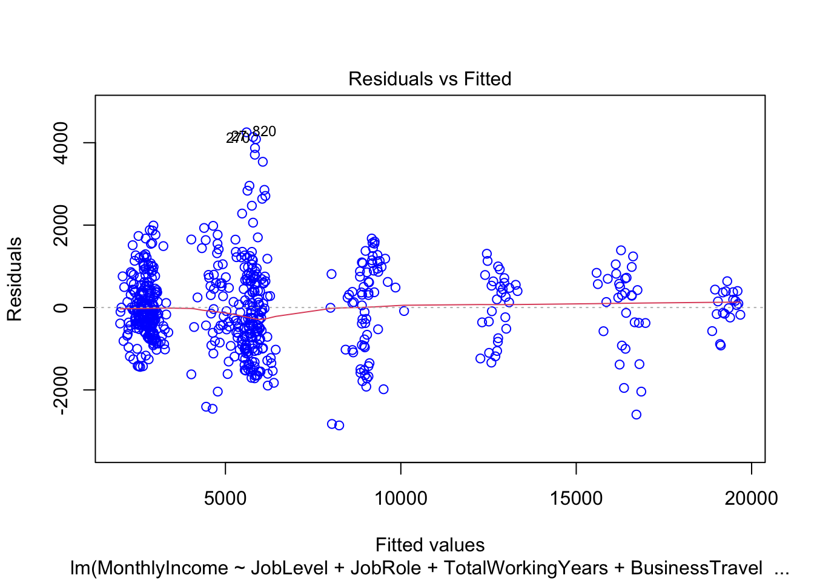
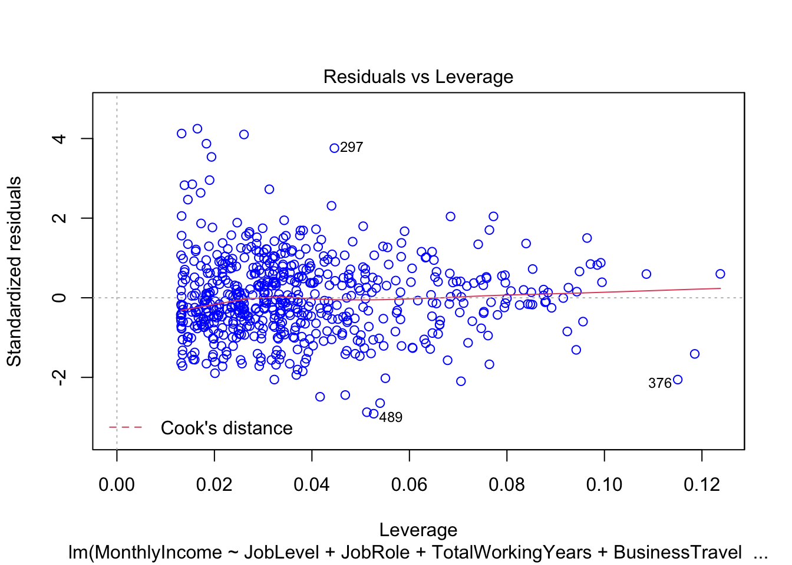
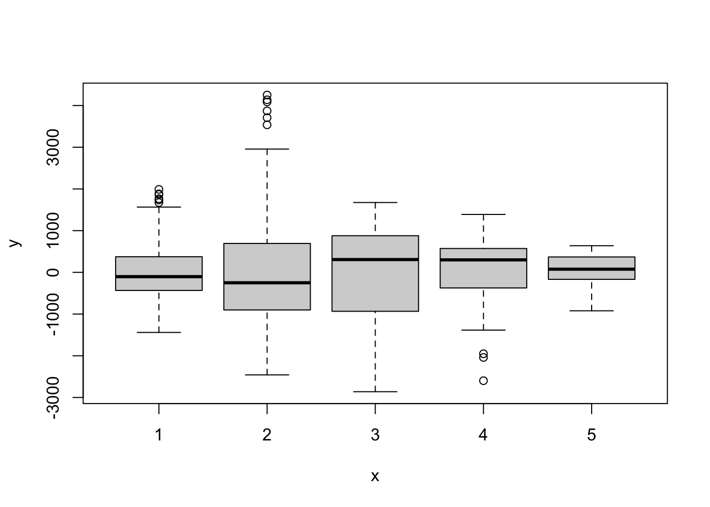
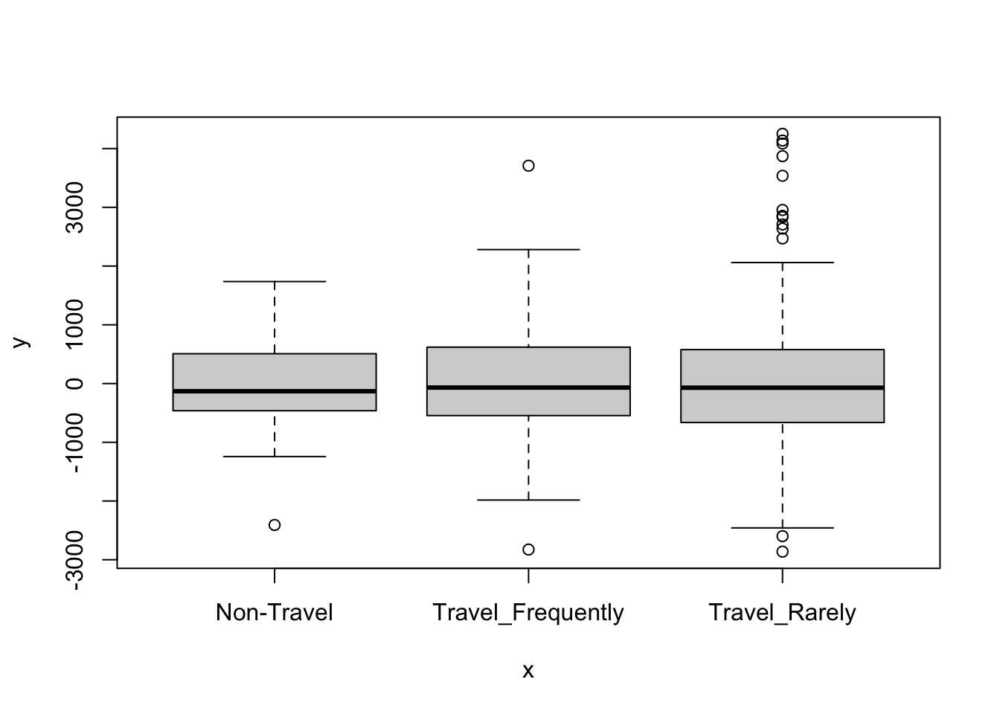
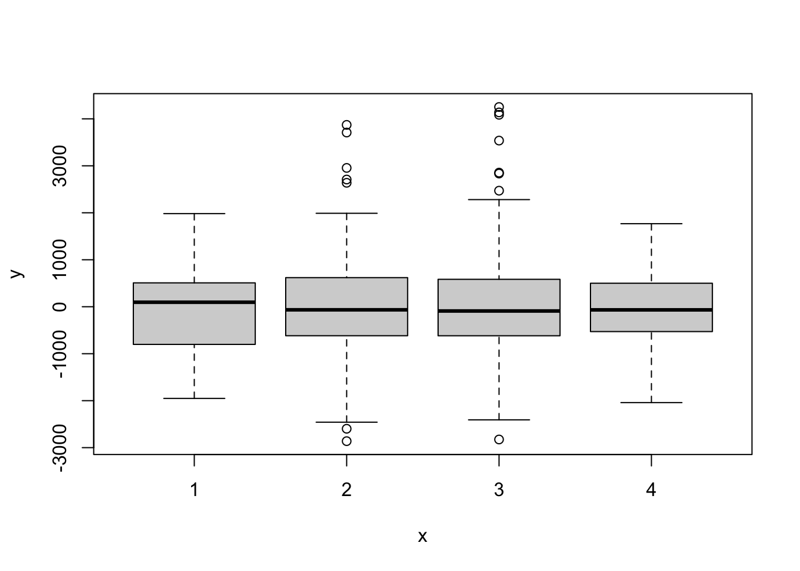

Case Study 2
Rick Fontenot
2/26/2021
Our Client DDSAnalytics specializes in talent management solutions for Fortune 100 companies to develop and retain employees. They have provided a dataset and asked us to identify factors that lead to attrition and to build a model to predict attrition. They are also interested in identifying some interesting trends between Job Roles as well as building a model to predict Salaries.
To start the exploration we will load the data and perform univariate analysis
DDS = read.csv("/Users/rickfontenot/Dropbox/SMU/GitHub/SMU/DS6306/CaseStudy2/CaseStudy2-data.csv", header = TRUE)
#Create List of numeric varibles
DDS_numeric <- names(DDS %>% select(where(is.numeric)))
#remove ID, EmployeeNumber and categorical/character variables
DDS_numeric <- DDS_numeric[-c(1,7)]
#Create List of non-numeric varibles
DDS_categorical <- names(DDS %>% select(!where(is.numeric)))
#Convert character variables to factors
DDS[sapply(DDS, is.character)] <- lapply(DDS[sapply(DDS, is.character)], as.factor)
plot_histogram(DDS)#EmployeeNumber and ID are identifers, not for further analysis
#Non-normal or skewed distributions for DistanceFromHome, MonthlyIncome, NumCompaniesWorked, PercentSalaryHike, TotalWorkingYears, YearsInCurrentRole, YearsSinceLastPromotion
#Perform Log transformations for variables with non-normal distributions
DDS_transformed <- DDS
DDS_transformed["logDistanceFromHome"] = log(DDS_transformed$DistanceFromHome)
DDS_transformed["logMonthlyIncome"] = log(DDS_transformed$MonthlyIncome)
DDS_transformed["logNumCompaniesWorked"] = log(DDS_transformed$NumCompaniesWorked)
DDS_transformed["logPercentSalaryHike"] = log(DDS_transformed$PercentSalaryHike)
DDS_transformed["logTotalWorkingYears"] = log(DDS_transformed$TotalWorkingYears)
DDS_transformed["logYearsInCurrentRole"] = log(DDS_transformed$YearsInCurrentRole)
DDS_transformed["logYearsSinceLastPromotion"] = log(DDS_transformed$YearsSinceLastPromotion)
DDS_transformed = subset(DDS_transformed, select = -c(DistanceFromHome,MonthlyIncome,NumCompaniesWorked,PercentSalaryHike,TotalWorkingYears,YearsInCurrentRole,YearsSinceLastPromotion))
#Replace -inf from log transformation with 0
DDS_transformed <- DDS_transformed %>% mutate_if(is.numeric, function(x) ifelse(is.infinite(x), 0, x))
#Log transformations show more normal distributions
plot_histogram(DDS_transformed)
plot_bar(DDS)#Over18 is all "Y", StandardHours all 80, EmployeeCount all 1, may not be valuable for further analysisExplore Correlations and relationships between variables
#Create function to summarize the most significant correlations since there are too many variables for one plot
corr_simple <- function(data=df,sig=0.5){
#convert data to numeric in order to run correlations
#convert to factor first to keep the integrity of the data - each value will become a number rather than turn into NA
df_cor <- data %>% mutate_if(is.character, as.factor)
df_cor <- df_cor %>% mutate_if(is.factor, as.numeric)
#run a correlation and drop the insignificant ones
corr <- cor(df_cor)
#prepare to drop duplicates and correlations of 1
corr[lower.tri(corr,diag=TRUE)] <- NA
#drop perfect correlations
corr[corr == 1] <- NA
#turn into a 3-column table
corr <- as.data.frame(as.table(corr))
#remove the NA values from above
corr <- na.omit(corr)
#select significant values
corr <- subset(corr, abs(Freq) > sig)
#sort by highest correlation
corr <- corr[order(-abs(corr$Freq)),]
#print table
print(corr)
#turn corr back into matrix in order to plot with corrplot
mtx_corr <- reshape2::acast(corr, Var1~Var2, value.var="Freq")
#plot correlations visually
corrplot(mtx_corr, is.corr=FALSE, tl.col="black", na.label=" ")
}
corr_simple(DDS_transformed)## Warning in cor(df_cor): the standard deviation is zero## Var1 Var2 Freq
## 1095 JobLevel logMonthlyIncome 0.9224617
## 1036 YearsAtCompany YearsWithCurrManager 0.7652262
## 1252 YearsAtCompany logYearsInCurrentRole 0.7402284
## 1219 logMonthlyIncome logTotalWorkingYears 0.7230435
## 1174 PerformanceRating logPercentSalaryHike 0.7229374
## 1253 YearsWithCurrManager logYearsInCurrentRole 0.7117700
## 1203 JobLevel logTotalWorkingYears 0.6758712
## 546 Department JobRole 0.6668582
## 882 MaritalStatus StockOptionLevel -0.6450310
## 1288 YearsAtCompany logYearsSinceLastPromotion 0.6037156
## 1190 Age logTotalWorkingYears 0.6022018
## 1216 YearsAtCompany logTotalWorkingYears 0.5909222
## 1258 logTotalWorkingYears logYearsInCurrentRole 0.5282189
## 1289 YearsWithCurrManager logYearsSinceLastPromotion 0.5247190
## 1295 logYearsInCurrentRole logYearsSinceLastPromotion 0.5218594
## 987 JobLevel YearsAtCompany 0.5205835
## 1217 YearsWithCurrManager logTotalWorkingYears 0.5161444#High Correlations between:
#JobLevel logMonthlyIncome 0.9224617
#YearsAtCompany YearsWithCurrManager 0.7652262
#YearsAtCompany logYearsInCurrentRole 0.7402284
#logMonthlyIncome logTotalWorkingYears 0.7230435
#PerformanceRating logPercentSalaryHike 0.7229374
#YearsWithCurrManager logYearsInCurrentRole 0.7117700
#JobLevel logTotalWorkingYears 0.6758712
#Department JobRole 0.6668582
#MaritalStatus StockOptionLevel -0.6450310 Evaluate significance of categorical variables effect on Attrition:
Based on Chi-Square tests, difference in Attrition rates are highly significant between categories for: OverTime, JobRole, MaritalStatus
There is also some significant difference for: Department, and BusinessTravel
#Prepare tables and perform Chi-Square tests for categorical by Attrition
OverTime = table(DDS$Attrition, DDS$OverTime)
OverTimechisq <- chisq.test(OverTime) #p-value = 2.333e-15
JobRole = table(DDS$Attrition, DDS$JobRole)
JobRolechisq <- chisq.test(JobRole) #p-value = 3.647e-10## Warning in chisq.test(JobRole): Chi-squared approximation may be incorrectMaritalStatus = table(DDS$Attrition, DDS$MaritalStatus)
MaritalStatuschisq <- chisq.test(MaritalStatus) #p-value = 3.379e-08
Department = table(DDS$Attrition, DDS$Department)
Departmentchisq <- chisq.test(Department) #p-value = 0.009424
BusinessTravel = table(DDS$Attrition, DDS$BusinessTravel)
BusinessTravelchisq <- chisq.test(BusinessTravel) #p-value = 0.04993
EducationField = table(DDS$Attrition, DDS$EducationField)
EducationFieldchisq <- chisq.test(EducationField) #p-value = 0.2682## Warning in chisq.test(EducationField): Chi-squared approximation may be
## incorrectGender = table(DDS$Attrition, DDS$Gender)
Genderchisq <- chisq.test(Gender) #p-value = 0.5151
#Plots and observations for variables with significant difference in Attrition Rates
mosaicplot(OverTime, shade = TRUE, las=2, main = "OverTime", pop = FALSE)## Warning: In mosaicplot.default(OverTime, shade = TRUE, las = 2, main = "OverTime",
## pop = FALSE) :
## extra argument 'pop' will be disregardedOverTime##
## No Yes
## No 558 172
## Yes 60 80#Jobs with overtime have significantly higher attrition rate
mosaicplot(JobRole, shade = TRUE, las=2, main = "JobRole", pop = FALSE)## Warning: In mosaicplot.default(JobRole, shade = TRUE, las = 2, main = "JobRole",
## pop = FALSE) :
## extra argument 'pop' will be disregardedJobRole##
## Healthcare Representative Human Resources Laboratory Technician Manager
## No 68 21 123 47
## Yes 8 6 30 4
##
## Manufacturing Director Research Director Research Scientist
## No 85 50 140
## Yes 2 1 32
##
## Sales Executive Sales Representative
## No 167 29
## Yes 33 24#Sales representatives have significantly higher attrition rate
#Manufacturing Directors and Research Directors have significantly lower attrition rate
#May want to reduce level of factors from 9, to just 3 with SalesRep, Director, & Other
DDS["JobRoleBin"]=character()
DDS$JobRoleBin="Other"
DDS$JobRole <- as.character(DDS$JobRole)
DDS$JobRoleBin[DDS$JobRole %in% c("Research Director")] <- "Director"
DDS$JobRoleBin[DDS$JobRole %in% c("Manufacturing Director")] <- "Director"
DDS$JobRoleBin[DDS$JobRole %in% c("Sales Representative")] <- "SalesRep"
DDS$JobRoleBin <- factor(DDS$JobRoleBin)
DDS$JobRole <- factor(DDS$JobRole)
JobRoleBin = table(DDS$Attrition, DDS$JobRoleBin)
JobRoleBinchisq <- chisq.test(JobRoleBin) #p-value improves to 2.54e-12
mosaicplot(MaritalStatus, shade = TRUE, las=2, main = "MaritalStatus", pop = FALSE)## Warning: In mosaicplot.default(MaritalStatus, shade = TRUE, las = 2, main = "MaritalStatus",
## pop = FALSE) :
## extra argument 'pop' will be disregardedMaritalStatus##
## Divorced Married Single
## No 179 352 199
## Yes 12 58 70#Single workers have significantly high attrition rate
#Divorced workers have significantly low attirion rate
mosaicplot(Department, shade = TRUE, las=2, main = "Department", pop = FALSE)## Warning: In mosaicplot.default(Department, shade = TRUE, las = 2, main = "Department",
## pop = FALSE) :
## extra argument 'pop' will be disregardedDepartment##
## Human Resources Research & Development Sales
## No 29 487 214
## Yes 6 75 59#Sales has significantly higher attrition rate, this variable may not have independence from JobRole variable
JobRole_v_Department = table(DDS$JobRole, DDS$Department)
JobRole_v_Department##
## Human Resources Research & Development Sales
## Healthcare Representative 0 76 0
## Human Resources 27 0 0
## Laboratory Technician 0 153 0
## Manager 8 23 20
## Manufacturing Director 0 87 0
## Research Director 0 51 0
## Research Scientist 0 172 0
## Sales Executive 0 0 200
## Sales Representative 0 0 53#Both Sales Reps and Sales Executives included in "Sales" Department, JobRole showed significant difference between Rep & Exec. Based on Lack of Independence, Department could be dropped from Attrition rate predectionsEvaluate significance of Numerical Variables on Attrition
#Create dataframe of numerical independent variables excluding Over18,StandardHours,EmployeeCount
#Use log transformed data to meet t-test assumptions
DDS_transformed["JobRoleBin"]=character()
DDS_transformed$JobRoleBin="Other"
DDS_transformed$JobRole <- as.character(DDS$JobRole)
DDS_transformed$JobRoleBin[DDS_transformed$JobRole %in% c("Research Director")] <- "Director"
DDS_transformed$JobRoleBin[DDS_transformed$JobRole %in% c("Manufacturing Director")] <- "Director"
DDS_transformed$JobRoleBin[DDS_transformed$JobRole %in% c("Sales Representative")] <- "SalesRep"
DDS_transformed$JobRoleBin <- factor(DDS_transformed$JobRoleBin)
DDS_transformed$JobRole <- factor(DDS_transformed$JobRole)
Numerical <- DDS_transformed %>% select(-DDS_categorical,-JobRoleBin,-Over18,-StandardHours,-EmployeeCount,Attrition)
Numerical_long <- gather(Numerical, key="variable", value="value",-c(ID,Attrition))
stat.test <- Numerical_long %>%
group_by(variable) %>%
t_test(value ~ Attrition) %>%
adjust_pvalue(method = "BH") %>%
add_significance()
#Sort and display numerical variables with highest significant difference by Attrition
stat.test <- stat.test %>% select(p, everything())
stat.test <- stat.test[order(stat.test$p),]
stat.test## # A tibble: 24 x 11
## p variable .y. group1 group2 n1 n2 statistic df p.adj
## <dbl> <chr> <chr> <chr> <chr> <int> <int> <dbl> <dbl> <dbl>
## 1 1.16e-8 logMont… value No Yes 730 140 5.96 196. 2.14e-7
## 2 1.78e-8 logTota… value No Yes 730 140 5.91 170. 2.14e-7
## 3 3.22e-7 logYear… value No Yes 730 140 5.29 198. 2.42e-6
## 4 4.04e-7 JobLevel value No Yes 730 140 5.23 212. 2.42e-6
## 5 2.00e-6 JobInvo… value No Yes 730 140 4.92 176. 9.60e-6
## 6 5.08e-6 YearsWi… value No Yes 730 140 4.68 210. 2.03e-5
## 7 3.86e-5 StockOp… value No Yes 730 140 4.22 188. 1.32e-4
## 8 5.05e-5 Age value No Yes 730 140 4.15 185. 1.52e-4
## 9 2.56e-4 YearsAt… value No Yes 730 140 3.73 192. 6.83e-4
## 10 1.50e-3 JobSati… value No Yes 730 140 3.22 198. 3.60e-3
## # … with 14 more rows, and 1 more variable: p.adj.signif <chr>Variable Importance and selection for predicting Attrition
DDS_transformed <- DDS_transformed %>% select(-EmployeeCount,-StandardHours,-Over18)
DDS_transformed <- DDS_transformed %>% select(Attrition, everything())
str(DDS_transformed)## 'data.frame': 870 obs. of 34 variables:
## $ Attrition : Factor w/ 2 levels "No","Yes": 1 1 1 1 1 1 1 1 1 1 ...
## $ ID : int 1 2 3 4 5 6 7 8 9 10 ...
## $ Age : int 32 40 35 32 24 27 41 37 34 34 ...
## $ BusinessTravel : Factor w/ 3 levels "Non-Travel","Travel_Frequently",..: 3 3 2 3 2 2 3 3 3 2 ...
## $ DailyRate : int 117 1308 200 801 567 294 1283 309 1333 653 ...
## $ Department : Factor w/ 3 levels "Human Resources",..: 3 2 2 3 2 2 2 3 3 2 ...
## $ Education : int 4 3 2 4 1 2 5 4 4 4 ...
## $ EducationField : Factor w/ 6 levels "Human Resources",..: 2 4 2 3 6 2 4 2 2 6 ...
## $ EmployeeNumber : int 859 1128 1412 2016 1646 733 1448 1105 1055 1597 ...
## $ EnvironmentSatisfaction : int 2 3 3 3 1 4 2 4 3 4 ...
## $ Gender : Factor w/ 2 levels "Female","Male": 2 2 2 1 1 2 2 1 1 2 ...
## $ HourlyRate : int 73 44 60 48 32 32 90 88 87 92 ...
## $ JobInvolvement : int 3 2 3 3 3 3 4 2 3 2 ...
## $ JobLevel : int 2 5 3 3 1 3 1 2 1 2 ...
## $ JobRole : Factor w/ 9 levels "Healthcare Representative",..: 8 6 5 8 7 5 7 8 9 1 ...
## $ JobSatisfaction : int 4 3 4 4 4 1 3 4 3 3 ...
## $ MaritalStatus : Factor w/ 3 levels "Divorced","Married",..: 1 3 3 2 3 1 2 1 2 2 ...
## $ MonthlyRate : int 9250 17544 19944 24032 17218 4809 5561 24223 18410 15332 ...
## $ OverTime : Factor w/ 2 levels "No","Yes": 1 1 1 1 2 1 2 2 2 1 ...
## $ PerformanceRating : int 3 3 3 3 3 4 3 3 3 3 ...
## $ RelationshipSatisfaction : int 3 1 3 3 3 3 1 3 4 2 ...
## $ StockOptionLevel : int 1 0 0 2 0 2 0 3 1 1 ...
## $ TrainingTimesLastYear : int 3 2 2 3 2 4 5 5 2 3 ...
## $ WorkLifeBalance : int 2 4 3 3 3 2 2 3 3 2 ...
## $ YearsAtCompany : int 5 20 2 14 6 9 4 1 1 8 ...
## $ YearsWithCurrManager : int 3 9 2 7 3 7 3 0 0 7 ...
## $ logDistanceFromHome : num 2.565 2.639 2.89 0 0.693 ...
## $ logMonthlyIncome : num 8.39 9.88 9.14 9.25 8.23 ...
## $ logNumCompaniesWorked : num 0.693 0 0.693 0 0 ...
## $ logPercentSalaryHike : num 2.4 2.64 2.4 2.94 2.56 ...
## $ logTotalWorkingYears : num 2.08 3.04 2.3 2.64 1.79 ...
## $ logYearsInCurrentRole : num 0.693 1.946 0.693 2.303 1.099 ...
## $ logYearsSinceLastPromotion: num 0 1.386 0.693 1.609 0 ...
## $ JobRoleBin : Factor w/ 3 levels "Director","Other",..: 2 1 1 2 2 1 2 2 3 2 ...# prepare training scheme
control <- trainControl(method="repeatedcv", number=10, repeats=3)
# train the model
model <- train(Attrition~., data=DDS_transformed, method="lvq", trControl=control)
# estimate variable importance
importance <- varImp(model, scale=FALSE)
# summarize importance
print(importance)## ROC curve variable importance
##
## only 20 most important variables shown (out of 33)
##
## Importance
## OverTime 0.6679
## logMonthlyIncome 0.6567
## logTotalWorkingYears 0.6559
## YearsAtCompany 0.6470
## StockOptionLevel 0.6455
## MaritalStatus 0.6438
## JobLevel 0.6406
## logYearsInCurrentRole 0.6362
## JobRoleBin 0.6322
## YearsWithCurrManager 0.6291
## Age 0.6265
## JobInvolvement 0.6159
## JobSatisfaction 0.5833
## JobRole 0.5829
## Department 0.5605
## logDistanceFromHome 0.5586
## EnvironmentSatisfaction 0.5532
## WorkLifeBalance 0.5491
## TrainingTimesLastYear 0.5428
## Education 0.5384# plot importance
plot(importance)library(CORElearn)
information.gain <- attrEval(Attrition ~ ., data=DDS_transformed, estimator = "InfGain")
sort(information.gain)## PerformanceRating Gender
## 0.0001666347 0.0004628770
## logYearsSinceLastPromotion RelationshipSatisfaction
## 0.0017875032 0.0020659083
## Education TrainingTimesLastYear
## 0.0020890277 0.0033208462
## logPercentSalaryHike MonthlyRate
## 0.0034209131 0.0035178832
## HourlyRate DailyRate
## 0.0044057689 0.0044863425
## BusinessTravel EducationField
## 0.0047673311 0.0049915400
## EmployeeNumber logNumCompaniesWorked
## 0.0068379340 0.0071332519
## logDistanceFromHome Department
## 0.0074508166 0.0074648224
## ID EnvironmentSatisfaction
## 0.0079917570 0.0083856564
## JobSatisfaction WorkLifeBalance
## 0.0085780754 0.0094374916
## logYearsInCurrentRole Age
## 0.0203890981 0.0215535995
## JobInvolvement YearsWithCurrManager
## 0.0216600278 0.0255237214
## logTotalWorkingYears MaritalStatus
## 0.0282626078 0.0293144990
## logMonthlyIncome JobLevel
## 0.0310985115 0.0317913272
## YearsAtCompany StockOptionLevel
## 0.0327292964 0.0394605817
## JobRoleBin OverTime
## 0.0451386017 0.0488108569
## JobRole
## 0.0515112956Build Naive Bayes predictor for Attrition starting with high importance variables, then tune based on correlated variables and p-values
#Split Train & Test
trainIndices = sample(seq(1:length(DDS_transformed$Age)),round(.7*length(DDS_transformed$Age)))
trainDDS = DDS_transformed[trainIndices,]
testDDS = DDS_transformed[-trainIndices,]
#Model 1 including all features with significant p-values or importance
features=c("OverTime","JobRoleBin","logMonthlyIncome","logTotalWorkingYears","MaritalStatus","logYearsInCurrentRole","JobLevel","JobInvolvement","YearsWithCurrManager","StockOptionLevel","Age","YearsAtCompany","JobSatisfaction","Department","WorkLifeBalance","EnvironmentSatisfaction","BusinessTravel","logDistanceFromHome")
#Specificity=70.59 % Acc=86.59 Sensitivity=88.99
model = naiveBayes(trainDDS[,features],as.factor(trainDDS$Attrition),laplace=1)
confusionMatrix(table(predict(model,testDDS[,features]),testDDS$Attrition))## Confusion Matrix and Statistics
##
##
## No Yes
## No 195 16
## Yes 27 23
##
## Accuracy : 0.8352
## 95% CI : (0.7846, 0.8781)
## No Information Rate : 0.8506
## P-Value [Acc > NIR] : 0.7850
##
## Kappa : 0.4194
##
## Mcnemar's Test P-Value : 0.1273
##
## Sensitivity : 0.8784
## Specificity : 0.5897
## Pos Pred Value : 0.9242
## Neg Pred Value : 0.4600
## Prevalence : 0.8506
## Detection Rate : 0.7471
## Detection Prevalence : 0.8084
## Balanced Accuracy : 0.7341
##
## 'Positive' Class : No
## #Model 2: Remove Department since correlated with JobRoleBin
features2=c("OverTime","JobRoleBin","logMonthlyIncome","logTotalWorkingYears","MaritalStatus","logYearsInCurrentRole","JobLevel","JobInvolvement","YearsWithCurrManager","StockOptionLevel","Age","YearsAtCompany","JobSatisfaction","WorkLifeBalance","EnvironmentSatisfaction","BusinessTravel","logDistanceFromHome")
#Specificity=67.65 % Acc=85.82, Sensitivity=88.55 both are decreases from Model1
model = naiveBayes(trainDDS[,features2],as.factor(trainDDS$Attrition),laplace=1)
confusionMatrix(table(predict(model,testDDS[,features2]),testDDS$Attrition))## Confusion Matrix and Statistics
##
##
## No Yes
## No 193 16
## Yes 29 23
##
## Accuracy : 0.8276
## 95% CI : (0.7762, 0.8714)
## No Information Rate : 0.8506
## P-Value [Acc > NIR] : 0.86951
##
## Kappa : 0.4037
##
## Mcnemar's Test P-Value : 0.07364
##
## Sensitivity : 0.8694
## Specificity : 0.5897
## Pos Pred Value : 0.9234
## Neg Pred Value : 0.4423
## Prevalence : 0.8506
## Detection Rate : 0.7395
## Detection Prevalence : 0.8008
## Balanced Accuracy : 0.7296
##
## 'Positive' Class : No
## #Model 3: Remove YearsAtCompany
features3=c("OverTime","JobRoleBin","logMonthlyIncome","logTotalWorkingYears","MaritalStatus","logYearsInCurrentRole","JobLevel","JobInvolvement","YearsWithCurrManager","StockOptionLevel","Age","JobSatisfaction","Department","WorkLifeBalance","EnvironmentSatisfaction","BusinessTravel","logDistanceFromHome")
#Specificity =67.65 % Acc=86.59 Sensitivity=89.43 Specificity decreased
model = naiveBayes(trainDDS[,features3],as.factor(trainDDS$Attrition),laplace=1)
confusionMatrix(table(predict(model,testDDS[,features3]),testDDS$Attrition))## Confusion Matrix and Statistics
##
##
## No Yes
## No 196 17
## Yes 26 22
##
## Accuracy : 0.8352
## 95% CI : (0.7846, 0.8781)
## No Information Rate : 0.8506
## P-Value [Acc > NIR] : 0.7850
##
## Kappa : 0.4082
##
## Mcnemar's Test P-Value : 0.2225
##
## Sensitivity : 0.8829
## Specificity : 0.5641
## Pos Pred Value : 0.9202
## Neg Pred Value : 0.4583
## Prevalence : 0.8506
## Detection Rate : 0.7510
## Detection Prevalence : 0.8161
## Balanced Accuracy : 0.7235
##
## 'Positive' Class : No
## #Model 4 Scale all numerical values
DDS_scaled <- DDS_transformed %>% mutate_if(is.numeric,scale)
trainIndices = sample(seq(1:length(DDS_transformed$Age)),round(.7*length(DDS_transformed$Age)))
trainDDS_scaled = DDS_scaled[trainIndices,]
testDDS_scaled = DDS_scaled[-trainIndices,]
features4=c("OverTime","JobRoleBin","logMonthlyIncome","logTotalWorkingYears","MaritalStatus","logYearsInCurrentRole","JobLevel","JobInvolvement","YearsWithCurrManager","StockOptionLevel","Age","YearsAtCompany","JobSatisfaction","Department","WorkLifeBalance","EnvironmentSatisfaction","BusinessTravel","logDistanceFromHome")
#Specificity =57.58 % Acc=86.21 Sensitivity=88.94 both are decreases from non-scaled model
model = naiveBayes(trainDDS_scaled[,features4],as.factor(trainDDS_scaled$Attrition),laplace=1)
confusionMatrix(table(predict(model,testDDS_scaled[,features4]),testDDS_scaled$Attrition))## Confusion Matrix and Statistics
##
##
## No Yes
## No 198 15
## Yes 23 25
##
## Accuracy : 0.8544
## 95% CI : (0.8057, 0.8949)
## No Information Rate : 0.8467
## P-Value [Acc > NIR] : 0.4056
##
## Kappa : 0.4815
##
## Mcnemar's Test P-Value : 0.2561
##
## Sensitivity : 0.8959
## Specificity : 0.6250
## Pos Pred Value : 0.9296
## Neg Pred Value : 0.5208
## Prevalence : 0.8467
## Detection Rate : 0.7586
## Detection Prevalence : 0.8161
## Balanced Accuracy : 0.7605
##
## 'Positive' Class : No
## #Model 5 remove JobLevel since it is highly correlated with Monthly Income
features=c("OverTime","JobRoleBin","logMonthlyIncome","logTotalWorkingYears","MaritalStatus","logYearsInCurrentRole","JobInvolvement","YearsWithCurrManager","StockOptionLevel","Age","YearsAtCompany","JobSatisfaction","Department","WorkLifeBalance","EnvironmentSatisfaction","BusinessTravel","logDistanceFromHome")
#Specificity =67.65 % Acc=88.12 Sensitivity=91.19 lowered specificity but increased accuracy
model = naiveBayes(trainDDS[,features],as.factor(trainDDS$Attrition),laplace=1)
confusionMatrix(table(predict(model,testDDS[,features]),testDDS$Attrition))## Confusion Matrix and Statistics
##
##
## No Yes
## No 198 17
## Yes 24 22
##
## Accuracy : 0.8429
## 95% CI : (0.793, 0.8849)
## No Information Rate : 0.8506
## P-Value [Acc > NIR] : 0.6738
##
## Kappa : 0.4246
##
## Mcnemar's Test P-Value : 0.3487
##
## Sensitivity : 0.8919
## Specificity : 0.5641
## Pos Pred Value : 0.9209
## Neg Pred Value : 0.4783
## Prevalence : 0.8506
## Detection Rate : 0.7586
## Detection Prevalence : 0.8238
## Balanced Accuracy : 0.7280
##
## 'Positive' Class : No
## #Model 6: Remove YearsWithCurrManager & YearsAtCompany since correlated with logYearsInCurrentRole which has lowest p-value
features6=c("OverTime","JobRoleBin","logMonthlyIncome","logTotalWorkingYears","MaritalStatus","logYearsInCurrentRole","JobLevel","JobInvolvement","StockOptionLevel","Age","JobSatisfaction","Department","WorkLifeBalance","EnvironmentSatisfaction","BusinessTravel","logDistanceFromHome")
#Specificity =67.65 % Acc=86.97 Sensitivity=89.87 lower specificity, slightly higher accuracy
model = naiveBayes(trainDDS[,features6],as.factor(trainDDS$Attrition),laplace=1)
confusionMatrix(table(predict(model,testDDS[,features6]),testDDS$Attrition))## Confusion Matrix and Statistics
##
##
## No Yes
## No 198 17
## Yes 24 22
##
## Accuracy : 0.8429
## 95% CI : (0.793, 0.8849)
## No Information Rate : 0.8506
## P-Value [Acc > NIR] : 0.6738
##
## Kappa : 0.4246
##
## Mcnemar's Test P-Value : 0.3487
##
## Sensitivity : 0.8919
## Specificity : 0.5641
## Pos Pred Value : 0.9209
## Neg Pred Value : 0.4783
## Prevalence : 0.8506
## Detection Rate : 0.7586
## Detection Prevalence : 0.8238
## Balanced Accuracy : 0.7280
##
## 'Positive' Class : No
## #Model 7: Remove YearsWithCurrManager & logYearsInCurrentRole since correlated with YearsAtCompany which has highest variable importance
features7=c("OverTime","JobRoleBin","logMonthlyIncome","logTotalWorkingYears","MaritalStatus","JobLevel","JobInvolvement","StockOptionLevel","Age","YearsAtCompany","JobSatisfaction","Department","WorkLifeBalance","EnvironmentSatisfaction","BusinessTravel","logDistanceFromHome")
#Specificity =64.71 % Acc=87.74 Sensitivity=91.19 lower specificity but higher accuracy
model = naiveBayes(trainDDS[,features7],as.factor(trainDDS$Attrition),laplace=1)
confusionMatrix(table(predict(model,testDDS[,features7]),testDDS$Attrition))## Confusion Matrix and Statistics
##
##
## No Yes
## No 198 17
## Yes 24 22
##
## Accuracy : 0.8429
## 95% CI : (0.793, 0.8849)
## No Information Rate : 0.8506
## P-Value [Acc > NIR] : 0.6738
##
## Kappa : 0.4246
##
## Mcnemar's Test P-Value : 0.3487
##
## Sensitivity : 0.8919
## Specificity : 0.5641
## Pos Pred Value : 0.9209
## Neg Pred Value : 0.4783
## Prevalence : 0.8506
## Detection Rate : 0.7586
## Detection Prevalence : 0.8238
## Balanced Accuracy : 0.7280
##
## 'Positive' Class : No
## #Model 8 Remove logTotalWorkingYears since correlated with logMonthlyIncome
features8=c("OverTime","JobRoleBin","logMonthlyIncome","MaritalStatus","logYearsInCurrentRole","JobLevel","JobInvolvement","YearsWithCurrManager","StockOptionLevel","Age","YearsAtCompany","JobSatisfaction","Department","WorkLifeBalance","EnvironmentSatisfaction","BusinessTravel","logDistanceFromHome")
#Specificity =73.53 % Acc=87.36 Sensitivity=89.43 improved on both
model = naiveBayes(trainDDS[,features8],as.factor(trainDDS$Attrition),laplace=1)
confusionMatrix(table(predict(model,testDDS[,features8]),testDDS$Attrition))## Confusion Matrix and Statistics
##
##
## No Yes
## No 190 14
## Yes 32 25
##
## Accuracy : 0.8238
## 95% CI : (0.772, 0.868)
## No Information Rate : 0.8506
## P-Value [Acc > NIR] : 0.90146
##
## Kappa : 0.4175
##
## Mcnemar's Test P-Value : 0.01219
##
## Sensitivity : 0.8559
## Specificity : 0.6410
## Pos Pred Value : 0.9314
## Neg Pred Value : 0.4386
## Prevalence : 0.8506
## Detection Rate : 0.7280
## Detection Prevalence : 0.7816
## Balanced Accuracy : 0.7484
##
## 'Positive' Class : No
## #Model 9 Combine improvements from Models 5,7 & 8: Remove JobLevel, YearsWithCurrManager, logYearsInCurrentRole, logTotalWorkingYears
features9=c("OverTime","JobRoleBin","logMonthlyIncome","MaritalStatus","JobInvolvement","StockOptionLevel","Age","YearsAtCompany","JobSatisfaction","Department","WorkLifeBalance","EnvironmentSatisfaction","BusinessTravel","logDistanceFromHome")
#Specificity=58.82 % Acc=90.42 Sensitivity=95.15 sensitivity dropped below threshold
model = naiveBayes(trainDDS[,features9],as.factor(trainDDS$Attrition),laplace=1)
confusionMatrix(table(predict(model,testDDS[,features9]),testDDS$Attrition))## Confusion Matrix and Statistics
##
##
## No Yes
## No 207 19
## Yes 15 20
##
## Accuracy : 0.8697
## 95% CI : (0.8227, 0.9081)
## No Information Rate : 0.8506
## P-Value [Acc > NIR] : 0.2196
##
## Kappa : 0.4649
##
## Mcnemar's Test P-Value : 0.6069
##
## Sensitivity : 0.9324
## Specificity : 0.5128
## Pos Pred Value : 0.9159
## Neg Pred Value : 0.5714
## Prevalence : 0.8506
## Detection Rate : 0.7931
## Detection Prevalence : 0.8659
## Balanced Accuracy : 0.7226
##
## 'Positive' Class : No
## #Model 10 Combine improvements from Models 5 & 8: Remove JobLevel & logTotalWorkingYears
features10=c("OverTime","JobRoleBin","logMonthlyIncome","MaritalStatus","logYearsInCurrentRole","JobInvolvement","YearsWithCurrManager","StockOptionLevel","Age","YearsAtCompany","JobSatisfaction","Department","WorkLifeBalance","EnvironmentSatisfaction","BusinessTravel","logDistanceFromHome")
#Specificity=73.53 % Acc=90.42 Sensitivity=92.95
model10 = naiveBayes(trainDDS[,features10],as.factor(trainDDS$Attrition),laplace=1)
confusionMatrix(table(predict(model10,testDDS[,features10]),testDDS$Attrition))## Confusion Matrix and Statistics
##
##
## No Yes
## No 197 14
## Yes 25 25
##
## Accuracy : 0.8506
## 95% CI : (0.8014, 0.8915)
## No Information Rate : 0.8506
## P-Value [Acc > NIR] : 0.5426
##
## Kappa : 0.4734
##
## Mcnemar's Test P-Value : 0.1093
##
## Sensitivity : 0.8874
## Specificity : 0.6410
## Pos Pred Value : 0.9336
## Neg Pred Value : 0.5000
## Prevalence : 0.8506
## Detection Rate : 0.7548
## Detection Prevalence : 0.8084
## Balanced Accuracy : 0.7642
##
## 'Positive' Class : No
## #Model 11 Combine improvements from Models 7 & 8: Remove YearsWithCurrManager, logYearsInCurrentRole, logTotalWorkingYears
features11=c("OverTime","JobRoleBin","logMonthlyIncome","MaritalStatus","JobLevel","JobInvolvement","StockOptionLevel","Age","YearsAtCompany","JobSatisfaction","Department","WorkLifeBalance","EnvironmentSatisfaction","BusinessTravel","logDistanceFromHome")
#Specificity=64.71 % Acc=90.04 Sensitivity=93.83
model = naiveBayes(trainDDS[,features11],as.factor(trainDDS$Attrition),laplace=1)
confusionMatrix(table(predict(model,testDDS[,features11]),testDDS$Attrition))## Confusion Matrix and Statistics
##
##
## No Yes
## No 201 16
## Yes 21 23
##
## Accuracy : 0.8582
## 95% CI : (0.8099, 0.8982)
## No Information Rate : 0.8506
## P-Value [Acc > NIR] : 0.4047
##
## Kappa : 0.4703
##
## Mcnemar's Test P-Value : 0.5108
##
## Sensitivity : 0.9054
## Specificity : 0.5897
## Pos Pred Value : 0.9263
## Neg Pred Value : 0.5227
## Prevalence : 0.8506
## Detection Rate : 0.7701
## Detection Prevalence : 0.8314
## Balanced Accuracy : 0.7476
##
## 'Positive' Class : No
## #Model 11 Combine improvements from Models 5 & 7: Remove JobLevel, YearsWithCurrManager, logYearsInCurrentRole
features11=c("OverTime","JobRoleBin","logMonthlyIncome","logTotalWorkingYears","MaritalStatus","JobInvolvement","StockOptionLevel","Age","YearsAtCompany","JobSatisfaction","Department","WorkLifeBalance","EnvironmentSatisfaction","BusinessTravel","logDistanceFromHome")
#Specificity=64.71 % Acc=88.89 Sensitivity=92.51
model = naiveBayes(trainDDS[,features11],as.factor(trainDDS$Attrition),laplace=1)
confusionMatrix(table(predict(model,testDDS[,features11]),testDDS$Attrition))## Confusion Matrix and Statistics
##
##
## No Yes
## No 205 20
## Yes 17 19
##
## Accuracy : 0.8582
## 95% CI : (0.8099, 0.8982)
## No Information Rate : 0.8506
## P-Value [Acc > NIR] : 0.4047
##
## Kappa : 0.424
##
## Mcnemar's Test P-Value : 0.7423
##
## Sensitivity : 0.9234
## Specificity : 0.4872
## Pos Pred Value : 0.9111
## Neg Pred Value : 0.5278
## Prevalence : 0.8506
## Detection Rate : 0.7854
## Detection Prevalence : 0.8621
## Balanced Accuracy : 0.7053
##
## 'Positive' Class : No
## #Best Model: Highest Accuracy while meeting Sensitivity&Specificity>60% is Model #10
#Features: "OverTime","JobRoleBin","logMonthlyIncome","MaritalStatus","logYearsInCurrentRole","JobInvolvement","YearsWithCurrManager","StockOptionLevel","Age","YearsAtCompany","JobSatisfaction","Department","WorkLifeBalance","EnvironmentSatisfaction","BusinessTravel","logDistanceFromHome"
#Accuracy=90.42% Specificity=73.53% Sensitivity=92.95Use Best Model to predict attrition for Competition Set
Competition = read.csv("/Users/rickfontenot/Dropbox/SMU/GitHub/SMU/DS6306/CaseStudy2/CaseStudy2CompSet No Attrition.csv", header = TRUE)
#Select variables of interest
Competition <- Competition %>% select(ID,OverTime,JobRole,MonthlyIncome,MaritalStatus,YearsInCurrentRole,JobInvolvement,YearsWithCurrManager,StockOptionLevel,Age,YearsAtCompany,JobSatisfaction,Department,WorkLifeBalance,EnvironmentSatisfaction,BusinessTravel,DistanceFromHome)
#Transform logMonthlyIncome logYearsInCurrentRole logDistanceFromHome
Competition_transformed <- Competition
Competition_transformed["logDistanceFromHome"] = log(Competition_transformed$DistanceFromHome)
Competition_transformed["logMonthlyIncome"] = log(Competition_transformed$MonthlyIncome)
Competition_transformed["logYearsInCurrentRole"] = log(Competition_transformed$YearsInCurrentRole)
Competition_transformed = subset(Competition_transformed, select = -c(DistanceFromHome,MonthlyIncome,YearsInCurrentRole))
#Replace -inf from log transformation with 0
Competition_transformed <- Competition_transformed %>% mutate_if(is.numeric, function(x) ifelse(is.infinite(x), 0, x))
#Create Bins for Job Role
Competition_transformed$JobRole <- as.character(Competition_transformed$JobRole)
Competition_transformed$JobRoleBin = "Other"
Competition_transformed$JobRoleBin[Competition_transformed$JobRole %in% c("Research Director")] <- "Director"
Competition_transformed$JobRoleBin[Competition_transformed$JobRole %in% c("Manufacturing Director")] <- "Director"
Competition_transformed$JobRoleBin[Competition_transformed$JobRole %in% c("Sales Representative")] <- "SalesRep"
Competition_transformed$JobRoleBin <- factor(Competition_transformed$JobRoleBin)
Competition_transformed$JobRole <- factor(Competition_transformed$JobRole)
Competition_transformed = subset(Competition_transformed, select = -c(JobRole))
#Convert character variables to factors
Competition_transformed[sapply(Competition_transformed, is.character)] <- lapply(Competition_transformed[sapply(Competition_transformed, is.character)], as.factor)
#Use Model#10 to make Attrition Predictions for competition set
Competition_transformed["Attrition"]<-predict(model10,Competition_transformed[,features10])
summary(Competition_transformed["Attrition"])## Attrition
## No :260
## Yes: 40#Predictions: No=268 Yes=32, AttritionRate = 10.67%
#Reoder Columns to have ID and Attrition Prediction first
Competition_transformed <- Competition_transformed %>% select(ID,Attrition)
#Output File with predictions
write.csv(Competition_transformed,"/Users/rickfontenot/Dropbox/SMU/GitHub/SMU/DS6306/CaseStudy2/Case2PredictionsFontenot Attrition.csv", row.names = TRUE)Correlations with Monthly Income
DDS_cor <- DDS %>% select(-Over18,-EmployeeCount,-StandardHours,-ID,-EmployeeNumber)
#Convert Categoricals from int to factors
DDS_cor[,'JobInvolvement']<-factor(DDS_cor[,'JobInvolvement'])
DDS_cor[,'JobLevel']<-factor(DDS_cor[,'JobLevel'])
DDS_cor[,'JobSatisfaction']<-factor(DDS_cor[,'JobSatisfaction'])
DDS_cor[,'JobInvolvement']<-factor(DDS_cor[,'JobInvolvement'])
DDS_cor[,'Education']<-factor(DDS_cor[,'Education'])
DDS_cor[,'EnvironmentSatisfaction']<-factor(DDS_cor[,'EnvironmentSatisfaction'])
DDS_cor[,'NumCompaniesWorked']<-factor(DDS_cor[,'NumCompaniesWorked'])
DDS_cor[,'PerformanceRating']<-factor(DDS_cor[,'PerformanceRating'])
DDS_cor[,'RelationshipSatisfaction']<-factor(DDS_cor[,'RelationshipSatisfaction'])
DDS_cor[,'StockOptionLevel']<-factor(DDS_cor[,'StockOptionLevel'])
DDS_cor[,'TrainingTimesLastYear']<-factor(DDS_cor[,'TrainingTimesLastYear'])
DDS_cor[,'WorkLifeBalance']<-factor(DDS_cor[,'WorkLifeBalance'])
DDS_cor[,'TrainingTimesLastYear']<-factor(DDS_cor[,'TrainingTimesLastYear'])
#Split Train & Test
trainIndices = sample(seq(1:length(DDS_cor$Age)),round(.7*length(DDS_cor$Age)))
trainDDS_cor = DDS_cor[trainIndices,]
testDDS_cor = DDS_cor[-trainIndices,]
#Build Model with all variables to create baseline, then use base model for selection methods
model <- lm(MonthlyIncome ~ ., data = trainDDS_cor)
summary(model)##
## Call:
## lm(formula = MonthlyIncome ~ ., data = trainDDS_cor)
##
## Residuals:
## Min 1Q Median 3Q Max
## -2921.2 -591.3 -71.3 536.0 3650.6
##
## Coefficients: (2 not defined because of singularities)
## Estimate Std. Error t value Pr(>|t|)
## (Intercept) 3.769e+03 8.440e+02 4.466 9.75e-06 ***
## Age -1.496e+00 6.971e+00 -0.215 0.8302
## AttritionYes -6.141e+01 1.462e+02 -0.420 0.6745
## BusinessTravelTravel_Frequently 3.232e+02 1.726e+02 1.872 0.0617 .
## BusinessTravelTravel_Rarely 2.778e+02 1.516e+02 1.832 0.0675 .
## DailyRate 2.568e-01 1.091e-01 2.354 0.0189 *
## DepartmentResearch & Development -1.845e+02 5.561e+02 -0.332 0.7402
## DepartmentSales -9.063e+02 5.721e+02 -1.584 0.1137
## DistanceFromHome -9.103e+00 5.329e+00 -1.708 0.0882 .
## Education2 -5.861e+01 1.523e+02 -0.385 0.7005
## Education3 -8.043e+01 1.394e+02 -0.577 0.5642
## Education4 1.193e+02 1.535e+02 0.777 0.4374
## Education5 -5.294e+02 3.000e+02 -1.765 0.0782 .
## EducationFieldLife Sciences 2.217e+02 4.125e+02 0.537 0.5912
## EducationFieldMarketing 4.383e+02 4.413e+02 0.993 0.3210
## EducationFieldMedical 2.438e+02 4.116e+02 0.592 0.5539
## EducationFieldOther 2.465e+02 4.497e+02 0.548 0.5839
## EducationFieldTechnical Degree 3.092e+02 4.259e+02 0.726 0.4681
## EnvironmentSatisfaction2 -1.232e+02 1.379e+02 -0.893 0.3722
## EnvironmentSatisfaction3 -6.431e+01 1.255e+02 -0.512 0.6087
## EnvironmentSatisfaction4 -6.545e+01 1.277e+02 -0.513 0.6083
## GenderMale 6.316e+01 8.745e+01 0.722 0.4705
## HourlyRate -2.597e+00 2.097e+00 -1.239 0.2160
## JobInvolvement2 -1.308e+02 1.991e+02 -0.657 0.5115
## JobInvolvement3 -6.995e+01 1.919e+02 -0.364 0.7157
## JobInvolvement4 7.042e+01 2.361e+02 0.298 0.7656
## JobLevel2 1.660e+03 1.753e+02 9.468 < 2e-16 ***
## JobLevel3 4.839e+03 2.328e+02 20.790 < 2e-16 ***
## JobLevel4 8.170e+03 3.678e+02 22.213 < 2e-16 ***
## JobLevel5 1.091e+04 4.376e+02 24.935 < 2e-16 ***
## JobRoleHuman Resources -1.055e+03 5.973e+02 -1.766 0.0779 .
## JobRoleLaboratory Technician -1.217e+03 2.133e+02 -5.706 1.92e-08 ***
## JobRoleManager 3.802e+03 3.566e+02 10.662 < 2e-16 ***
## JobRoleManufacturing Director 4.084e+02 1.979e+02 2.063 0.0396 *
## JobRoleResearch Director 3.774e+03 2.800e+02 13.479 < 2e-16 ***
## JobRoleResearch Scientist -9.632e+02 2.197e+02 -4.384 1.40e-05 ***
## JobRoleSales Executive 6.667e+02 4.324e+02 1.542 0.1237
## JobRoleSales Representative -7.483e+02 4.848e+02 -1.544 0.1233
## JobSatisfaction2 -6.065e+01 1.410e+02 -0.430 0.6672
## JobSatisfaction3 2.862e+01 1.233e+02 0.232 0.8166
## JobSatisfaction4 1.825e+01 1.228e+02 0.149 0.8820
## MaritalStatusMarried 1.588e+02 1.174e+02 1.353 0.1766
## MaritalStatusSingle 3.835e+01 1.853e+02 0.207 0.8361
## MonthlyRate -4.855e-03 6.058e-03 -0.801 0.4232
## NumCompaniesWorked1 -1.621e+02 1.356e+02 -1.195 0.2325
## NumCompaniesWorked2 4.460e+01 2.023e+02 0.220 0.8256
## NumCompaniesWorked3 3.618e+02 1.966e+02 1.841 0.0662 .
## NumCompaniesWorked4 6.861e+01 2.000e+02 0.343 0.7316
## NumCompaniesWorked5 1.216e+02 2.395e+02 0.508 0.6118
## NumCompaniesWorked6 3.938e+01 2.459e+02 0.160 0.8728
## NumCompaniesWorked7 -1.987e+02 2.273e+02 -0.874 0.3825
## NumCompaniesWorked8 9.606e+01 2.766e+02 0.347 0.7285
## NumCompaniesWorked9 -7.871e+01 2.772e+02 -0.284 0.7766
## OverTimeYes 9.268e+01 9.928e+01 0.933 0.3510
## PercentSalaryHike 1.063e+01 1.845e+01 0.576 0.5646
## PerformanceRating4 -2.141e+02 1.892e+02 -1.132 0.2582
## RelationshipSatisfaction2 1.433e+01 1.427e+02 0.100 0.9200
## RelationshipSatisfaction3 -3.513e+01 1.236e+02 -0.284 0.7764
## RelationshipSatisfaction4 -6.694e+01 1.214e+02 -0.551 0.5817
## StockOptionLevel1 3.268e+01 1.482e+02 0.220 0.8256
## StockOptionLevel2 -4.018e+01 1.986e+02 -0.202 0.8397
## StockOptionLevel3 -1.084e+02 2.214e+02 -0.490 0.6245
## TotalWorkingYears 2.304e+01 1.456e+01 1.582 0.1142
## TrainingTimesLastYear1 -9.470e+01 3.085e+02 -0.307 0.7590
## TrainingTimesLastYear2 -3.022e+02 2.483e+02 -1.217 0.2241
## TrainingTimesLastYear3 -3.256e+02 2.506e+02 -1.300 0.1943
## TrainingTimesLastYear4 -4.214e+02 2.789e+02 -1.511 0.1315
## TrainingTimesLastYear5 -6.280e+01 2.795e+02 -0.225 0.8223
## TrainingTimesLastYear6 -4.126e+01 3.212e+02 -0.128 0.8978
## WorkLifeBalance2 9.290e+01 2.059e+02 0.451 0.6521
## WorkLifeBalance3 4.291e+01 1.938e+02 0.221 0.8248
## WorkLifeBalance4 -2.408e+02 2.267e+02 -1.062 0.2887
## YearsAtCompany 2.714e+00 1.712e+01 0.159 0.8741
## YearsInCurrentRole 3.292e+01 2.039e+01 1.615 0.1070
## YearsSinceLastPromotion 4.289e+01 1.826e+01 2.348 0.0192 *
## YearsWithCurrManager -4.321e+01 2.016e+01 -2.143 0.0325 *
## JobRoleBinOther NA NA NA NA
## JobRoleBinSalesRep NA NA NA NA
## ---
## Signif. codes: 0 '***' 0.001 '**' 0.01 '*' 0.05 '.' 0.1 ' ' 1
##
## Residual standard error: 1006 on 533 degrees of freedom
## Multiple R-squared: 0.9562, Adjusted R-squared: 0.95
## F-statistic: 155.2 on 75 and 533 DF, p-value: < 2.2e-16#Variable Selection Methods
#Forward step selection 8 parameters included, RMSE = 955, Adj. R2=0.9572
step.forward <- ols_step_forward_p(model)
step.forward##
## Selection Summary
## ----------------------------------------------------------------------------------------------
## Variable Adj.
## Step Entered R-Square R-Square C(p) AIC RMSE
## ----------------------------------------------------------------------------------------------
## 1 JobLevel 0.9204 0.9198 364.3878 10444.1134 1274.2805
## 2 JobRole 0.9489 0.9479 18.4409 10189.3374 1027.0971
## 3 TotalWorkingYears 0.9505 0.9495 1.0579 10172.0399 1011.8016
## 4 DailyRate 0.9509 0.9498 -1.6213 10169.2883 1008.7102
## 5 BusinessTravel 0.9515 0.9501 -6.0846 10166.6633 1004.9317
## 6 Department 0.9518 0.9504 -8.8197 10165.7637 1002.5923
## 7 YearsSinceLastPromotion 0.9520 0.9505 -9.2441 10165.2396 1001.3657
## 8 YearsWithCurrManager 0.9523 0.9507 -10.7308 10163.5913 999.2194
## 9 Education 0.9529 0.9510 -15.9713 10163.9444 996.3605
## 10 YearsInCurrentRole 0.9531 0.9511 -16.3683 10163.3916 995.1268
## 11 DistanceFromHome 0.9533 0.9512 -16.0486 10163.5957 994.5139
## 12 PerformanceRating 0.9534 0.9512 -15.5083 10164.0313 994.0917
## 13 WorkLifeBalance 0.9537 0.9513 -17.4181 10165.8209 993.2288
## 14 NumCompaniesWorked 0.9546 0.9515 -26.6050 10171.6110 991.0681
## 15 HourlyRate 0.9547 0.9515 -25.9201 10172.1593 990.7586
## 16 TrainingTimesLastYear 0.9554 0.9517 -31.6177 10175.5927 989.0524
## 17 MaritalStatus 0.9556 0.9518 -32.1767 10176.7179 988.4812
## ----------------------------------------------------------------------------------------------#Backward step selection 18 parameters removed (30-18=12 remain), RMSE = 952, Adj. R2=0.9575
step.backward <- ols_step_backward_p(model)
step.backward##
##
## Elimination Summary
## -----------------------------------------------------------------------------------------------
## Variable Adj.
## Step Removed R-Square R-Square C(p) AIC RMSE
## -----------------------------------------------------------------------------------------------
## 1 JobSatisfaction 0.9562 0.9503 -15.4906 10220.4258 1003.5138
## 2 RelationshipSatisfaction 0.9561 0.9505 -16.8916 10215.1093 1001.2789
## 3 YearsAtCompany 0.9561 0.9506 -18.8716 10213.1320 1000.3700
## 4 StockOptionLevel 0.9561 0.9508 -20.1398 10207.9659 998.2860
## 5 EducationField 0.9559 0.9511 -20.1206 10200.2606 995.5953
## 6 Age 0.9559 0.9512 -22.1180 10198.2636 994.6905
## 7 EnvironmentSatisfaction 0.9558 0.9513 -23.3256 10193.1617 992.7157
## 8 JobInvolvement 0.9557 0.9515 -24.3803 10188.2314 990.8989
## 9 Attrition 0.9557 0.9516 -26.2626 10186.3645 990.1156
## 10 PercentSalaryHike 0.9557 0.9517 -27.9430 10184.7257 989.5198
## 11 Gender 0.9557 0.9517 -29.4647 10183.2659 989.0713
## 12 MonthlyRate 0.9556 0.9517 -30.8900 10181.9142 988.7123
## 13 OverTime 0.9556 0.9518 -32.1767 10180.7179 988.4812
## -----------------------------------------------------------------------------------------------#Stepwise selection 6 parameters, RMSE=957, Adj. R2=0.957
stepwise <- ols_step_both_p(model)
stepwise##
## Stepwise Selection Summary
## ----------------------------------------------------------------------------------------------------
## Added/ Adj.
## Step Variable Removed R-Square R-Square C(p) AIC RMSE
## ----------------------------------------------------------------------------------------------------
## 1 JobLevel addition 0.920 0.920 364.3880 10444.1134 1274.2805
## 2 JobRole addition 0.949 0.948 18.4410 10189.3374 1027.0971
## 3 TotalWorkingYears addition 0.951 0.949 1.0580 10172.0399 1011.8016
## 4 DailyRate addition 0.951 0.950 -1.6210 10169.2883 1008.7102
## 5 BusinessTravel addition 0.951 0.950 -6.0850 10166.6633 1004.9317
## 6 Department addition 0.952 0.950 -8.8200 10165.7637 1002.5923
## ----------------------------------------------------------------------------------------------------#Best fit from forward selection includes parameters: JobLevel + JobRole + TotalWorkingYears + BusinessTravel + Education + DailyRate + JobInvolvement + YearsWithCurrManager
#Examine scatter plots to look for any non-linear relationships that may need transformation
plot(DDS_cor$JobLevel,DDS_cor$MonthlyIncome)
plot(DDS_cor$JobRole,DDS_cor$MonthlyIncome)plot(DDS_cor$TotalWorkingYears,DDS_cor$MonthlyIncome)plot(DDS_cor$BusinessTravel,DDS_cor$MonthlyIncome)
plot(DDS_cor$Education,DDS_cor$MonthlyIncome)plot(DDS_cor$DailyRate,DDS_cor$MonthlyIncome)plot(DDS_cor$JobInvolvement,DDS_cor$MonthlyIncome)plot(DDS_cor$YearsWithCurrManager,DDS_cor$MonthlyIncome)#Model2 based on variables from forward and backward selection methods
model2 <- lm(MonthlyIncome ~ JobLevel + JobRole + TotalWorkingYears + BusinessTravel + Education + DailyRate + JobInvolvement + YearsWithCurrManager, data = trainDDS_cor)
summary(model2)##
## Call:
## lm(formula = MonthlyIncome ~ JobLevel + JobRole + TotalWorkingYears +
## BusinessTravel + Education + DailyRate + JobInvolvement +
## YearsWithCurrManager, data = trainDDS_cor)
##
## Residuals:
## Min 1Q Median 3Q Max
## -3005.5 -644.3 -81.5 624.4 4170.0
##
## Coefficients:
## Estimate Std. Error t value Pr(>|t|)
## (Intercept) 3339.8207 315.3692 10.590 < 2e-16 ***
## JobLevel2 1581.0133 166.9685 9.469 < 2e-16 ***
## JobLevel3 4824.2057 223.2152 21.612 < 2e-16 ***
## JobLevel4 8170.3849 345.2635 23.664 < 2e-16 ***
## JobLevel5 10889.2637 408.1414 26.680 < 2e-16 ***
## JobRoleHuman Resources -1085.0643 291.1244 -3.727 0.000212 ***
## JobRoleLaboratory Technician -1264.6580 205.6927 -6.148 1.45e-09 ***
## JobRoleManager 3354.8561 283.8689 11.818 < 2e-16 ***
## JobRoleManufacturing Director 364.2035 187.5718 1.942 0.052657 .
## JobRoleResearch Director 3602.1849 257.3188 13.999 < 2e-16 ***
## JobRoleResearch Scientist -1029.2868 210.1542 -4.898 1.26e-06 ***
## JobRoleSales Executive 2.9233 162.8707 0.018 0.985686
## JobRoleSales Representative -1435.3966 260.1594 -5.517 5.18e-08 ***
## TotalWorkingYears 41.2136 10.2738 4.012 6.82e-05 ***
## BusinessTravelTravel_Frequently 324.6332 164.0786 1.979 0.048339 *
## BusinessTravelTravel_Rarely 347.3407 143.7015 2.417 0.015950 *
## Education2 -110.9813 145.7978 -0.761 0.446845
## Education3 -95.5411 133.3406 -0.717 0.473957
## Education4 80.7807 142.3777 0.567 0.570682
## Education5 -566.2629 286.3611 -1.977 0.048461 *
## DailyRate 0.2205 0.1045 2.109 0.035344 *
## JobInvolvement2 -104.6864 188.7413 -0.555 0.579343
## JobInvolvement3 -19.9867 179.9904 -0.111 0.911620
## JobInvolvement4 108.5841 220.4724 0.493 0.622547
## YearsWithCurrManager -14.3134 13.2383 -1.081 0.280049
## ---
## Signif. codes: 0 '***' 0.001 '**' 0.01 '*' 0.05 '.' 0.1 ' ' 1
##
## Residual standard error: 1003 on 584 degrees of freedom
## Multiple R-squared: 0.9523, Adjusted R-squared: 0.9503
## F-statistic: 485.4 on 24 and 584 DF, p-value: < 2.2e-16mse=mean(residuals(model2)^2)
mse## [1] 965346.1rmse=sqrt(mse)
rmse #935## [1] 982.5203plot(model2, which=1, col=c("blue")) # Residuals vs Fitted Plotplot(model2, which=2, col=c("red")) # Q-Q Plotplot(model2, which=3, col=c("blue")) # Scale-Location Plotplot(model2, which=4, col=c("blue")) # CooksD
plot(model2, which=5, col=c("blue")) # Residuals vs Leverage#Model3 remove YearsWithCurrentManager which had high p-value in Model2
model3 <- lm(MonthlyIncome ~ JobLevel + JobRole + TotalWorkingYears + BusinessTravel + Education + DailyRate + JobInvolvement, data = trainDDS_cor)
summary(model3)##
## Call:
## lm(formula = MonthlyIncome ~ JobLevel + JobRole + TotalWorkingYears +
## BusinessTravel + Education + DailyRate + JobInvolvement,
## data = trainDDS_cor)
##
## Residuals:
## Min 1Q Median 3Q Max
## -3032.5 -651.7 -85.2 633.4 4193.6
##
## Coefficients:
## Estimate Std. Error t value Pr(>|t|)
## (Intercept) 3341.9217 315.4087 10.596 < 2e-16 ***
## JobLevel2 1569.3208 166.6420 9.417 < 2e-16 ***
## JobLevel3 4803.5477 222.4281 21.596 < 2e-16 ***
## JobLevel4 8194.0305 344.6199 23.777 < 2e-16 ***
## JobLevel5 10901.7849 408.0360 26.718 < 2e-16 ***
## JobRoleHuman Resources -1094.3067 291.0409 -3.760 0.000187 ***
## JobRoleLaboratory Technician -1282.6835 205.0456 -6.256 7.65e-10 ***
## JobRoleManager 3356.8405 283.9040 11.824 < 2e-16 ***
## JobRoleManufacturing Director 349.0006 187.0710 1.866 0.062597 .
## JobRoleResearch Director 3587.7015 257.0070 13.960 < 2e-16 ***
## JobRoleResearch Scientist -1042.9214 209.8058 -4.971 8.77e-07 ***
## JobRoleSales Executive -9.5199 162.4871 -0.059 0.953300
## JobRoleSales Representative -1440.9623 260.1460 -5.539 4.60e-08 ***
## TotalWorkingYears 37.6729 9.7393 3.868 0.000122 ***
## BusinessTravelTravel_Frequently 319.0783 164.0218 1.945 0.052213 .
## BusinessTravelTravel_Rarely 347.6510 143.7219 2.419 0.015871 *
## Education2 -116.7956 145.7197 -0.802 0.423163
## Education3 -96.2153 133.3584 -0.721 0.470903
## Education4 74.5452 142.2814 0.524 0.600527
## Education5 -584.5788 285.9009 -2.045 0.041332 *
## DailyRate 0.2172 0.1045 2.079 0.038088 *
## JobInvolvement2 -103.1241 188.7631 -0.546 0.585058
## JobInvolvement3 -18.5660 180.0116 -0.103 0.917889
## JobInvolvement4 101.1983 220.3984 0.459 0.646289
## ---
## Signif. codes: 0 '***' 0.001 '**' 0.01 '*' 0.05 '.' 0.1 ' ' 1
##
## Residual standard error: 1003 on 585 degrees of freedom
## Multiple R-squared: 0.9522, Adjusted R-squared: 0.9503
## F-statistic: 506.3 on 23 and 585 DF, p-value: < 2.2e-16mse=mean(residuals(model3)^2)
mse## [1] 967278.5rmse=sqrt(mse)
rmse #936## [1] 983.5032plot(model3, which=1, col=c("blue")) # Residuals vs Fitted Plotplot(model3, which=2, col=c("red")) # Q-Q Plotplot(model3, which=3, col=c("blue")) # Scale-Location Plot
plot(model3, which=4, col=c("blue")) # CooksDplot(model3, which=5, col=c("blue")) # Residuals vs Leverage#Model4 remove DailyRate which had high p-value in Model3
model4 <- lm(MonthlyIncome ~ JobLevel + JobRole + TotalWorkingYears + BusinessTravel + Education + JobInvolvement, data = trainDDS_cor)
summary(model4)##
## Call:
## lm(formula = MonthlyIncome ~ JobLevel + JobRole + TotalWorkingYears +
## BusinessTravel + Education + JobInvolvement, data = trainDDS_cor)
##
## Residuals:
## Min 1Q Median 3Q Max
## -2937.4 -622.0 -99.3 665.1 4325.0
##
## Coefficients:
## Estimate Std. Error t value Pr(>|t|)
## (Intercept) 3527.246 303.401 11.626 < 2e-16 ***
## JobLevel2 1582.226 166.997 9.475 < 2e-16 ***
## JobLevel3 4816.118 222.975 21.599 < 2e-16 ***
## JobLevel4 8202.829 345.569 23.737 < 2e-16 ***
## JobLevel5 10951.954 408.474 26.812 < 2e-16 ***
## JobRoleHuman Resources -1097.799 291.860 -3.761 0.000186 ***
## JobRoleLaboratory Technician -1300.494 205.446 -6.330 4.87e-10 ***
## JobRoleManager 3292.805 283.026 11.634 < 2e-16 ***
## JobRoleManufacturing Director 334.478 187.469 1.784 0.074913 .
## JobRoleResearch Director 3555.653 257.270 13.821 < 2e-16 ***
## JobRoleResearch Scientist -1046.656 210.392 -4.975 8.59e-07 ***
## JobRoleSales Executive -16.361 162.913 -0.100 0.920041
## JobRoleSales Representative -1447.657 260.862 -5.550 4.34e-08 ***
## TotalWorkingYears 37.941 9.766 3.885 0.000114 ***
## BusinessTravelTravel_Frequently 307.500 164.391 1.871 0.061907 .
## BusinessTravelTravel_Rarely 346.111 144.127 2.401 0.016641 *
## Education2 -131.738 145.954 -0.903 0.367108
## Education3 -107.488 133.625 -0.804 0.421494
## Education4 61.859 142.553 0.434 0.664494
## Education5 -597.325 286.644 -2.084 0.037606 *
## JobInvolvement2 -108.207 189.281 -0.572 0.567762
## JobInvolvement3 -6.098 180.421 -0.034 0.973047
## JobInvolvement4 102.862 221.020 0.465 0.641822
## ---
## Signif. codes: 0 '***' 0.001 '**' 0.01 '*' 0.05 '.' 0.1 ' ' 1
##
## Residual standard error: 1006 on 586 degrees of freedom
## Multiple R-squared: 0.9518, Adjusted R-squared: 0.95
## F-statistic: 526.1 on 22 and 586 DF, p-value: < 2.2e-16mse=mean(residuals(model3)^2)
mse## [1] 967278.5rmse=sqrt(mse)
rmse #936## [1] 983.5032plot(model4, which=1, col=c("blue")) # Residuals vs Fitted Plot
plot(model4, which=2, col=c("red")) # Q-Q Plotplot(model4, which=3, col=c("blue")) # Scale-Location Plotplot(model4, which=4, col=c("blue")) # CooksDplot(model4, which=5, col=c("blue")) # Residuals vs Leverage
plot(trainDDS_cor$JobLevel,residuals(model4))
plot(trainDDS_cor$JobRole,residuals(model4))plot(trainDDS_cor$TotalWorkingYears,residuals(model4))plot(trainDDS_cor$BusinessTravel,residuals(model4))
plot(trainDDS_cor$Education,residuals(model4))
plot(trainDDS_cor$JobInvolvement,residuals(model4))
#Model4 Predictions on Testing set
testDDS_cor$prediction <- predict(model4, testDDS_cor)
testDDS_cor$residual <- testDDS_cor$MonthlyIncome - testDDS_cor$prediction
mse=mean((testDDS_cor$residual)^2)
mse## [1] 1036502rmse=sqrt(mse)
rmse #1115## [1] 1018.087Use Best Model to predict attrition for Competition Set
Competition2 = read.csv("/Users/rickfontenot/Dropbox/SMU/GitHub/SMU/DS6306/CaseStudy2/CaseStudy2CompSet No Salary.csv", header = TRUE)
#Select variables of interest
Competition2 <- Competition2 %>% select(ID,JobLevel,JobRole,TotalWorkingYears,BusinessTravel,Education,JobInvolvement)
#Convert Categoricals from int to factors
Competition2[,'JobInvolvement']<-factor(Competition2[,'JobInvolvement'])
Competition2[,'JobLevel']<-factor(Competition2[,'JobLevel'])
Competition2[,'JobInvolvement']<-factor(Competition2[,'JobInvolvement'])
Competition2[,'Education']<-factor(Competition2[,'Education'])
Competition2[,'JobRole']<-factor(Competition2[,'JobRole'])
Competition2[,'BusinessTravel']<-factor(Competition2[,'BusinessTravel'])
#Model4 Predictions on Competition set
Competition2$MonthlyIncome <- predict(model4, Competition2)
#Select Columns to output
Competition2.predictions <- Competition2 %>% select(ID,MonthlyIncome)
#Output File with predictions
write.csv(Competition2.predictions,"/Users/rickfontenot/Dropbox/SMU/GitHub/SMU/DS6306/CaseStudy2/Case2PredictionsFontenot Salary.csv", row.names = TRUE)Explore JobRole specific trends
#Create dataframe of numerical independent variables excluding Over18,StandardHours,EmployeeCount
Numerical3 <- DDS %>% select(-DDS_categorical,-JobRoleBin,-Over18,-StandardHours,-EmployeeCount,JobRole)
Numerical3_long <- gather(Numerical3, key="variable", value="value",-c(ID,JobRole))
stat.test3 <- Numerical3_long %>%
group_by(variable) %>%
t_test(value ~ JobRole) %>%
adjust_pvalue(method = "BH") %>%
add_significance()
stat.test3 <- stat.test3 %>% select(p, everything())
stat.test3 <- stat.test3[order(stat.test3$p),]
stat.test3## # A tibble: 864 x 11
## p variable .y. group1 group2 n1 n2 statistic df p.adj
## <dbl> <chr> <chr> <chr> <chr> <int> <int> <dbl> <dbl> <dbl>
## 1 3.88e-73 JobLevel value Resea… Sales… 172 200 -23.1 361. 3.35e-70
## 2 8.03e-65 JobLevel value Sales… Sales… 200 53 25.3 204. 3.47e-62
## 3 1.39e-56 JobLevel value Labor… Sales… 153 200 -19.3 344. 4.00e-54
## 4 2.79e-54 Monthly… value Labor… Sales… 153 200 -19.1 308. 6.03e-52
## 5 1.06e-53 Monthly… value Sales… Sales… 200 53 20.6 225. 1.83e-51
## 6 1.76e-53 Monthly… value Resea… Sales… 172 200 -18.8 317. 2.53e-51
## 7 1.27e-48 Monthly… value Manag… Sales… 51 53 42.5 64.0 1.57e-46
## 8 8.25e-46 Monthly… value Manag… Resea… 51 172 41.6 59.7 8.91e-44
## 9 1.21e-45 Monthly… value Labor… Manag… 153 51 -41.8 59.2 1.16e-43
## 10 1.51e-44 Monthly… value Manag… Manuf… 51 87 22.4 119. 1.30e-42
## # … with 854 more rows, and 1 more variable: p.adj.signif <chr>par(mar=c(12,5,1,1)) # extra large bottom margin
plot(Numerical3$JobRole,Numerical3$JobLevel, ylab="JobLevel",las=2)plot(Numerical3$JobRole,Numerical3$MonthlyIncome, ylab="MonthlyIncome",las=2)plot(Numerical3$JobRole,Numerical3$TotalWorkingYears, ylab="TotalWorkingYears",las=2)plot(Numerical3$JobRole,Numerical3$Age, ylab="Age",las=2)plot(Numerical3$JobRole,Numerical3$YearsAtCompany, ylab="YearsAtCompany",las=2)MaritalStatus = table(DDS$JobRole, DDS$MaritalStatus)
mosaicplot(MaritalStatus, shade = TRUE, las=2, main = "MaritalStatus", pop = FALSE)## Warning: In mosaicplot.default(MaritalStatus, shade = TRUE, las = 2, main = "MaritalStatus",
## pop = FALSE) :
## extra argument 'pop' will be disregardedMaritalStatus##
## Divorced Married Single
## Healthcare Representative 18 38 20
## Human Resources 8 13 6
## Laboratory Technician 28 71 54
## Manager 9 31 11
## Manufacturing Director 24 44 19
## Research Director 13 28 10
## Research Scientist 40 74 58
## Sales Executive 45 90 65
## Sales Representative 6 21 26#Significantly Higher Rate of Single people within Sales Rep job role
JobSatisfaction = table(DDS$JobRole, DDS$JobSatisfaction)
mosaicplot(JobSatisfaction, shade = TRUE, las=2, main = "JobSatisfaction", pop = FALSE)## Warning: In mosaicplot.default(JobSatisfaction, shade = TRUE, las = 2, main = "JobSatisfaction",
## pop = FALSE) :
## extra argument 'pop' will be disregardedJobSatisfaction##
## 1 2 3 4
## Healthcare Representative 16 9 23 28
## Human Resources 5 8 8 6
## Laboratory Technician 32 31 43 47
## Manager 12 14 12 13
## Manufacturing Director 12 23 29 23
## Research Director 13 11 16 11
## Research Scientist 32 31 48 61
## Sales Executive 48 25 61 66
## Sales Representative 9 14 14 16Session Information
sessionInfo()## R version 4.0.2 (2020-06-22)
## Platform: x86_64-apple-darwin17.0 (64-bit)
## Running under: macOS Catalina 10.15.7
##
## Matrix products: default
## BLAS: /Library/Frameworks/R.framework/Versions/4.0/Resources/lib/libRblas.dylib
## LAPACK: /Library/Frameworks/R.framework/Versions/4.0/Resources/lib/libRlapack.dylib
##
## locale:
## [1] en_US.UTF-8/en_US.UTF-8/en_US.UTF-8/C/en_US.UTF-8/en_US.UTF-8
##
## attached base packages:
## [1] grid stats graphics grDevices utils datasets methods
## [8] base
##
## other attached packages:
## [1] CORElearn_1.54.2 table1_1.2.1 ggthemes_4.2.0 mapproj_1.2.7
## [5] maps_3.3.0 class_7.3-17 e1071_1.7-4 plotly_4.9.2.1
## [9] VIM_6.0.0 colorspace_1.4-1 mice_3.12.0 usmap_0.5.1
## [13] GGally_2.0.0 visdat_0.5.3 rstatix_0.6.0 ggpubr_0.4.0
## [17] olsrr_0.5.3 corrplot_0.84 gplots_3.1.1 DataExplorer_0.8.2
## [21] caret_6.0-86 lattice_0.20-41 forcats_0.5.0 stringr_1.4.0
## [25] purrr_0.3.4 readr_1.4.0 tidyr_1.1.2 tibble_3.0.3
## [29] ggplot2_3.3.2 tidyverse_1.3.0 dplyr_1.0.2
##
## loaded via a namespace (and not attached):
## [1] readxl_1.3.1 backports_1.1.10 plyr_1.8.6
## [4] igraph_1.2.6 lazyeval_0.2.2 sp_1.4-4
## [7] splines_4.0.2 digest_0.6.25 foreach_1.5.1
## [10] htmltools_0.5.0 fansi_0.4.1 magrittr_1.5
## [13] cluster_2.1.0 openxlsx_4.2.3 recipes_0.1.15
## [16] modelr_0.1.8 gower_0.2.2 rvest_0.3.6
## [19] haven_2.3.1 xfun_0.17 crayon_1.3.4
## [22] jsonlite_1.7.1 survival_3.1-12 zoo_1.8-8
## [25] iterators_1.0.13 glue_1.4.2 gtable_0.3.0
## [28] ipred_0.9-9 car_3.0-10 DEoptimR_1.0-8
## [31] abind_1.4-5 scales_1.1.1 DBI_1.1.0
## [34] Rcpp_1.0.5 plotrix_3.8-1 viridisLite_0.3.0
## [37] laeken_0.5.1 foreign_0.8-80 Formula_1.2-4
## [40] stats4_4.0.2 lava_1.6.8.1 prodlim_2019.11.13
## [43] vcd_1.4-8 htmlwidgets_1.5.1 httr_1.4.2
## [46] RColorBrewer_1.1-2 ellipsis_0.3.1 farver_2.0.3
## [49] pkgconfig_2.0.3 reshape_0.8.8 nnet_7.3-14
## [52] dbplyr_2.0.0 utf8_1.1.4 labeling_0.3
## [55] tidyselect_1.1.0 rlang_0.4.10 reshape2_1.4.4
## [58] munsell_0.5.0 cellranger_1.1.0 tools_4.0.2
## [61] cli_2.0.2 generics_0.1.0 ranger_0.12.1
## [64] broom_0.7.3 evaluate_0.14 yaml_2.2.1
## [67] goftest_1.2-2 ModelMetrics_1.2.2.2 knitr_1.30
## [70] fs_1.5.0 zip_2.1.1 robustbase_0.93-6
## [73] caTools_1.18.1 nlme_3.1-148 xml2_1.3.2
## [76] compiler_4.0.2 rstudioapi_0.11 curl_4.3
## [79] ggsignif_0.6.0 reprex_0.3.0 stringi_1.5.3
## [82] Matrix_1.2-18 vctrs_0.3.4 pillar_1.4.6
## [85] lifecycle_0.2.0 networkD3_0.4 lmtest_0.9-38
## [88] data.table_1.13.6 bitops_1.0-6 R6_2.4.1
## [91] rpart.plot_3.0.9 KernSmooth_2.23-17 gridExtra_2.3
## [94] rio_0.5.16 codetools_0.2-16 boot_1.3-25
## [97] MASS_7.3-51.6 gtools_3.8.2 assertthat_0.2.1
## [100] withr_2.3.0 nortest_1.0-4 parallel_4.0.2
## [103] hms_0.5.3 rpart_4.1-15 timeDate_3043.102
## [106] rmarkdown_2.6 carData_3.0-4 pROC_1.16.2
## [109] lubridate_1.7.9.2